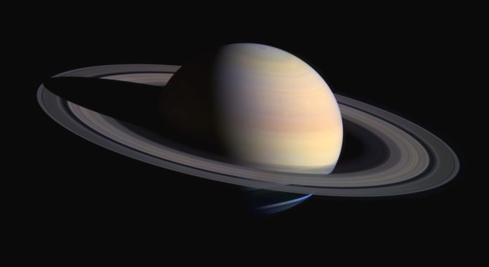

Юпитер.
Самая большая планета в Солнечной системе. Ее радиус составляет 69912 км, что практически в 20 раз
превышает
земной.

Солнечная система – это совокупность планет, вращающихся вокруг центральной звезды Солнце.
Меркурий.
Ближайшая к Солнцу планета, также является самой маленькой в системе. Ее радиус составляет лишь
2440 км.
Венера.
Вторая планета от Солнца, носит имя в честь древнеримской богини любви.
Земля.
Третья планета от Солнца, единственная, где присутствуют большие территориальные области, заполненные
водой.
Из-за благоприятных климатических условий и достаточного количества ресурсов является
единственным
источником жизни в Солнечной системе . Радиус планеты составляет 6378 км.
Сатурн.
Шестая по счету планета, знаменитая своими кольцами, состоящими из льда и каменистых метеороидов.
Уран.
Третья по размерам планета в Солнечной системе. Ее радиус равен 25267 км. Температура на Уране держится
на
уровне -230 градусов по Цельсию, что делает его самой холодной планетой.